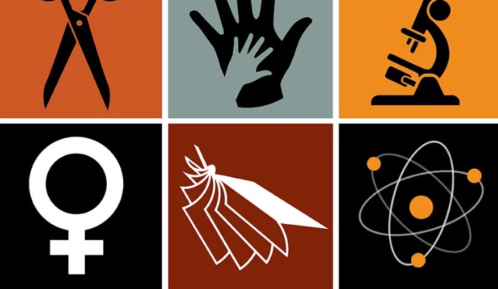
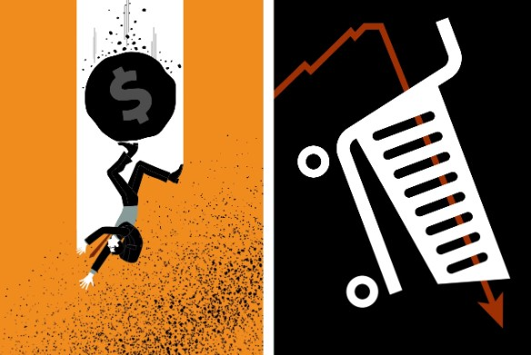

De súbito, tudo mudou
A multidão de refugiados, o medo polonês de ser o próximo na lista da invasão e o novo curso da direita radical
|
De súbito, tudo mudouA multidão de refugiados, o medo polonês de ser o próximo na lista da invasão e o novo curso da direita radical |
 |
Bienal do mundo novoOs primeiros curadores negros da mostra de arte em São Paulo. |
| > |
A volta do manto TupinambáMuseu nacional da Dinamarca vai devolver para o Brasil relíquia sagrada que está na Europa desde o século XVII |
 > > |
Madrugada VaziaCom dispersão das cracolândias, restaurantes do Centro de São Paulo fecham mais cedo e reforçam segurança |
De volta para o futuroA experiência radicalmente nova do Chile |
|
A bomba-relógio dos cartões de créditoFamílias brasileiras comprometem 27% da renda com dívidas, a maior parte relacionada a consumo |
|
 |
"Proibido roubar. Risco de morte."Facções consolidam hegemonia na Amazônia e impõem falsa pacificação em áreas dominadas |
|  |
Mulheres nos dias de hojeO efeito-tesoura para mulheres na ciência |
Ilhados em meio ao cicloneO relato de uma professora que perdeu tudo mas abriu a porta de casa para deixar a água sair e conseguiu sobreviver |
|
|  |
Juros altos, varejo em baixaA crise em efeito dominó |
| NOTÍCIAS | Publicado em | Visualizações |
|---|---|---|
| Pedagogia da desativação | Junho, 2023 | 1.116 |
| Tijuca com maresia | Abril, 2023 | 1.112 |
| Colônia de pescadores em Copacabana faz 100 anos | Junho, 2023 | 983 |
| Pelé X Maradona à indiana | Maio, 2023 | 981 |
| Os riscos de corrigir os livros clássicos infantojuvenis | Maio, 2023 | 927 |
| Americanas, a fraude titânica | Março, 2023 | 899 |
| O drama dos opioides | Maio, 2023 | 877 |
| A santa feminista | Junho, 2023 | 863 |
| A insurreição permanente | Abril, 2023 | 855 |
| E Bruce Lee virou Freud | Maio, 2023 | 851 |
| Liga das Nações feminina de vôlei 2023: onde assistir Brasil x Canadá. A seleção brasileira abre a última semana da fase de classificação da Liga das Nações feminina de vôlei nesta quarta-feira. |
Pablo Maia sofre carrinho violento, é substituído e preocupa São Paulo. Aos 23 minutos da primeira etapa, o zagueiro Leizza entrou de forma violenta na canela do volante Pablo Maia. O argentino foi expulso mas Pablo deixou o campo. |
|---|---|
| Confederação Brasileira tira chancela da Liga Nacional de Basquete. A CBB divulgou um ofício que confirma a retirada da chancela da Liga Nacional de Basquete para organizar competições oficiais no país. Em resposta, a Liga afirmou que quer diálogo para encontrar uma solução. |
Verstappen e Hamilton trocam farpas antes de GP da Áustria de Fórmula 1. O debate teve início após Hamilton afirmar que entende que o rival tem uma boa vantagem no campeonato de pilotos e, assim, sua equipe pode começar a pensar em desenvolver o carro para a temporada do ano que vem. |
| |
|
Ex-juiz tenta polarizar com antigo rival enquanto base bolsonarista troca afagos com novo ministro do Supremo
A sabatina de Zanin demorou oito horas, terminando às seis da tarde. Enquanto os últimos senadores se pronunciavam na CCJ, Moro fazia hora no plenário do Senado, esvaziado naquele momento. Trocou palavras com Hamilton Mourão e Nelsinho Trad (PSD-MS). Depois, sentou-se em sua poltrona e passou a mexer no celular. Quando terminou a sabatina, Pacheco abriu imediatamente a sessão para votar a indicação de Zanin. O plenário então começou a encher e formaram-se rodas de conversa entre os senadores. Moro permaneceu sentado, sozinho.
Acesse para saber mais.
Diversidade religiosa faz bem a um tribunal, mas Bolsonaro quer mesmo um vendilhão da Constituição daí vem a força de André Mendonça para chegar ao Supremo
Com a iminente aposentadoria do ministro Marco Aurélio, que completará 75 anos em julho, a relação entre religião e STF voltará a ganhar primazia, agora por outro motivo: a promessa, publicamente feita por Jair Bolsonaro desde o primeiro ano de seu governo, de nomear um ministro “terrivelmente evangélico” para o tribunal. Ao indicar o ministro Nunes Marques para a vaga deixada por Celso de Mello, Bolsonaro rolou essa dívida assumida com parlamentares da Bancada da Bíblia e líderes de algumas igrejas que desfrutam de acesso privilegiado a ele. Todos contam que a fatura finalmente será paga desta vez.
Acesse para saber mais.
Os militares podem fazer bem ao governo e ao país, mas é preciso eliminar as mensagens dúbias. Depois de 35 anos de regime democrático, as apreensões a respeito de uma intervenção militar foram ressuscitadas. O assunto é tema de manifestações populares em apoio ao atual governo e aparece nas entrelinhas de declarações de alguns dos seus representantes. Há algumas razões para que tais temores tenham voltado à tona, mas as mais evidentes parecem ser a presença de militares da ativa na estrutura de governo, algo sem precedentes na Nova República, e as mensagens dúbias que vêm transmitindo.
Acesse para saber mais.
Durante a CinemaCon 2023, o trailer da sequência foi exibido e mostrou ares de uma superprodução de guerra. Como anunciado pelo diretor, uma das motivações para o filme era dar a impressão de continuidade e renovação para a franquia - e isso pôde ser visto nos poucos minutos exibidos durante o painel da Warner. Para criar a sensação de épico e inédito, todas as locações utilizadas nas gravações foram novas, e o filme foi gravado inteiramente em IMAX, como revelou o diretor Denis Villeneuve pouco antes no palco. “O primeiro filme foi filmado 40% em IMAX. Desta vez, fizemos ele 100%.” A expectativa para o filme é grande, e não por acaso.
O Prime Video e a Warner Bros. Discovery anunciam hoje (29) que a HBO Max agora está disponível nos Prime Video Channels, um serviço dentro do streaming de Jeff Bezos em que é possível ter acesso ao catálogo de filmes e séries de outras plataformas -- incluindo concorrentes. A novidade vale para o Brasil e México. Membros Prime nestes países poderão assinar HBO Max por meio do Prime Video Channels em TVs e em dispositivos como Fire TV, dispositivos móveis e online. Os assinantes também terão acesso aos conteúdos oferecidos pelo serviço de streaming da Warner Bros., Max, quando for lançado no final do ano na América Latina.
Estar no set de Indiana Jones e a Relíquia do Destino foi muito semelhante a estar “no último ano da escola”, segundo Boyd Holbrook. O ator, que interpreta um dos vilões do filme, disse que já assinou o contrato para o longa sabendo que ele seria o último de Harrison Ford no papel do aventureiro. Mads Mikkelsen, outro dos antagonistas do filme, conta que estava presente quando Ford gravou a sua última cena como Indy. “Ele nos deixou esperando um pouquinho - tínhamos terminado alguns detalhes e ficamos lá esperando para assistir ao último take dele. Foi tocante, realmente emocionante”, relata.
Trailer Duna- Parte II
Cenas em detalhes por Pablo Villaça
Forum - A cor da cultura
Combate ao Trabalho Infantil - Futura
Previsões Astrológicas